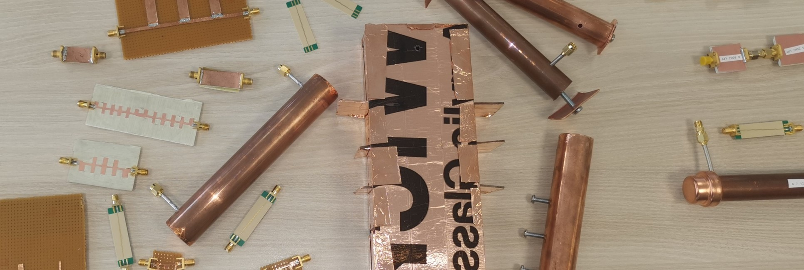
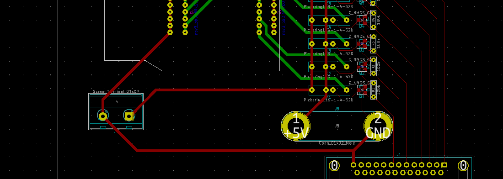

Spirit Semiconductor
RF Diplexer
What?
- I built a high and low pass RF filter to make a diplexer
- The specification required high frequency cutoff points and as much stop band rejection as possible
How?
- I experimented with different technologies including wave guides, microstrip and stripline
- AWS design environment was used to design and optimise the filters
Results
- I came to up with a way to make high rejection filters using DIY store materials
- The low-pass filter cost less than £5 to make and the high-pass cost less than £10. Both met specification
- Filters at these frequencies typically cost £100+ per filter
High Voltage PCB
What?
- I designed a PCB capable of handling up to 2kV
- The PCB interfaced a piece of test equipment to an EVB for ESD testing
How?
- I taught my self how to use KiCad to make schematics, component footprints and PCB layouts
Results
- The PCB was never printed as it was decided not to use the test equipment for high-voltage ESD testing
- In my second year at Spirit, I developed and documented a methodology to use the same test equipment for characterising ESD circuits